Il primo argomento che affronteremo nell'affacciarsi ad un uso più avanzato di Excel è capire ogni tipo di formato e di dato che Excel è in grado di sopportare poi andremo ad analizzare alcuni strumenti che excel offre per importare dati da diverse risorse, quindi andremo a capire:
- Quali formati di file posso apire o salvare (più comuni) con Excel e come?
- Estensioni di Excel
- Basati su file di testo
- Di lettura non modificabili
- Quali strumenti di importazione automatica offre Excel e come si utilizzano?
- Formati testo/CSV
- Formati XML
- Dal web (webscraping)
Quali formati di file posso apire o salvare (più comuni) con Excel e come?
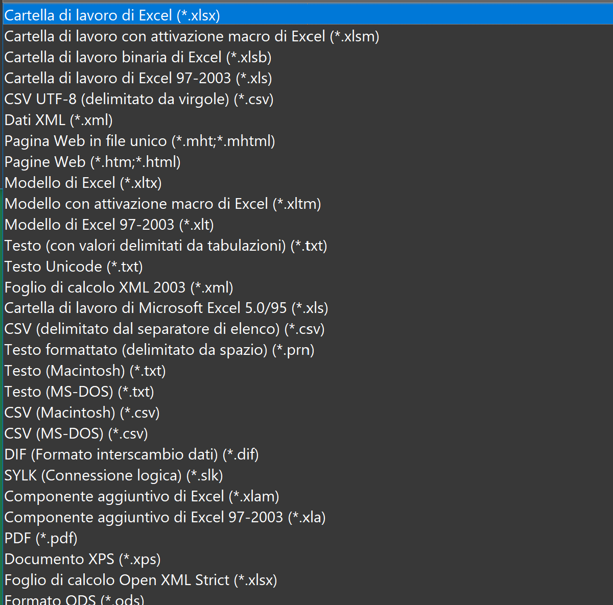
Questi formati sono suddivisibili (non a livello canonico dell'informatica ma solo per aiutare l'interpretazione) in tre sottocategorie:
Estensioni di Excel
In questa categoria rientrano quei formati creati appositamente da Microsoft Office per Excel
- .xls foglio di calcolo creato e associato principalmente con le versioni precedenti di Microsoft Excel, in particolare dal 97 versione fino al 2003. E 'stato sostituito da Office Open formato XML (XLSX) nel 2007. Ma altri programmi gratuiti come Open Office lavorano ancora con questo formato.
- .xlsx formato "normalmente" utilizzato per i fogli di calcolo con Excel dal 2007
- .xlsm formato nel quale si salvano i foglio di calcolo con all'interno macro (funzioni scritte in VBA)
- .xlsb formato che riduce le dimensione di un foglio di calcolo rispetto ai formati sopra utilizzando un linguaggio binario ma può avere problemi di compatibilità con altri programmi che non riconoscono il formato binario. [approfondimento]
- .xltx / .xltm /.xlt sono formati che identificano i file modello, ossia dei file che vengono utilizzati come file di avvio per le nuove cartelle di lavoro. I modelli contengono impostazioni salvate come il numero predefinito di fogli per cartella di lavoro, formattazione, formule, grafica e barre degli strumenti personalizzate. La differenza tra le due estensioni è che il formato XLTM può memorizzare codice macro VBA e XML mentre solitamente per creare dei templete da associare ad excel (Spreadsheet Template file) si utilizza il formato XLTX [approfondimento]
- .xlam / .xla sono dormati che permettono di creare dei componenti aggiuntivi per Excel (cioè creare funzioni personalizzate) [approfondimento]
Basati su file di testo
Questi formati sono in grado di contenere solo dei record non funzione o altre formattazioni grafiche per tabelle, la principali qualità di questa tipologia di formati è la loro capacità di "racchiudere tante informazioni occupando uno spazio molto piccolo", infatti in questi formati, ogni riga della tabella (o record della base dati) è normalmente rappresentata da una linea di testo, che a sua volta è divisa in campi (le singole colonne) separati da un apposito carattere separatore, ciascuno dei quali rappresenta un valore.
I formati più comuni in questo ambito sono il .csv, il .txt e il .prn per aprire questi formati in Excel e poterli modificare è necessario eseguire delle operazioni semplici ma senza le quali risulta complicato modifcarli o leggerli, nell'esempio sottostante faremo un esempio con un .csv in quanto risulta tra i tre il formato più usato (non useremo in questa parte lo strumento di importazione automatica dei .csv di Excel per far capire la logica sottostante a questo formato):
Per esempio proviamo a scarire e aprire
questo file ,un dataset sui film, che corrisponde ad una matrice con 163 284 elementi divisi in tre colonne dove nella prima colonna c'è il titolo del film, nella seconda il voto assegnato da IMDB e nella terza il numero di persone che hanno votato.
Una volta scaricato e aperto il file dovrebbe comparire cosi:
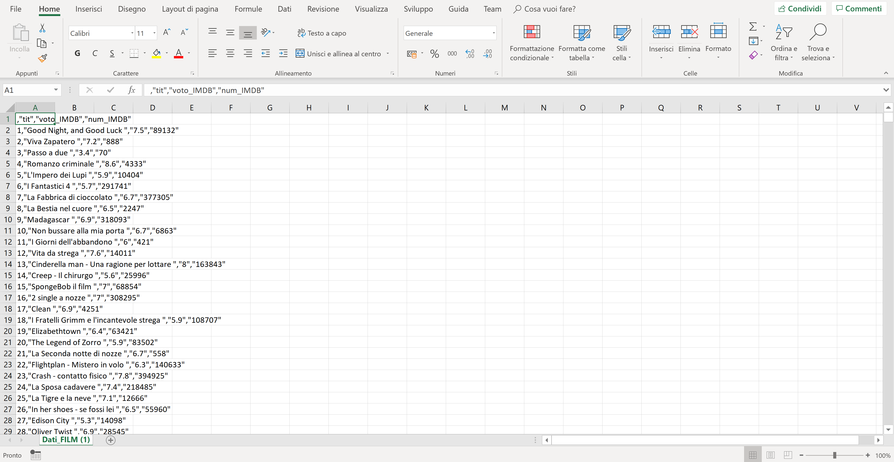
Come prima cosa è necessario selezionare la prima colonna e andare nella sezione "Dati" e cliccare su "Testo in colonne":
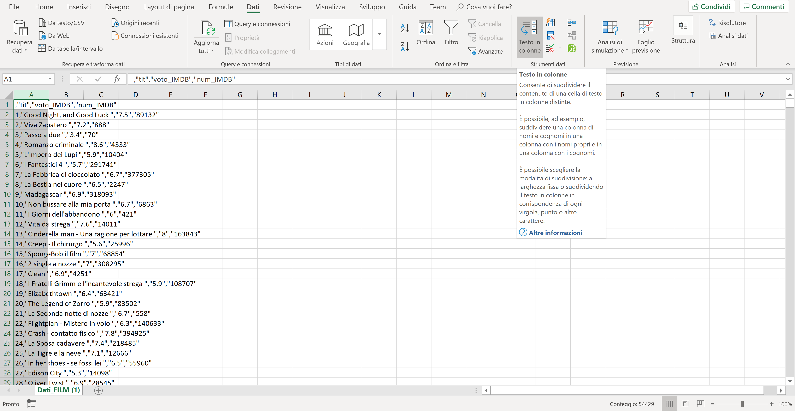
Una volta cliccato "Testo in colonne", si aprirà una schermata nella quale bisogna selezionare su delimitato e poi andare avanti:
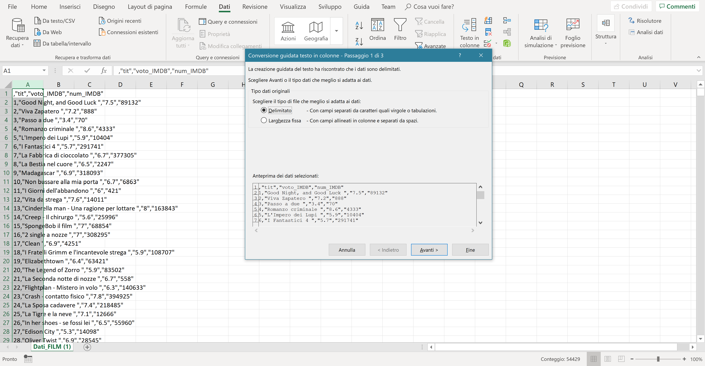
Cliccare su tabulazione, virgola e controllare che il delimitatore di testo sia " e poi cliccare avanti:
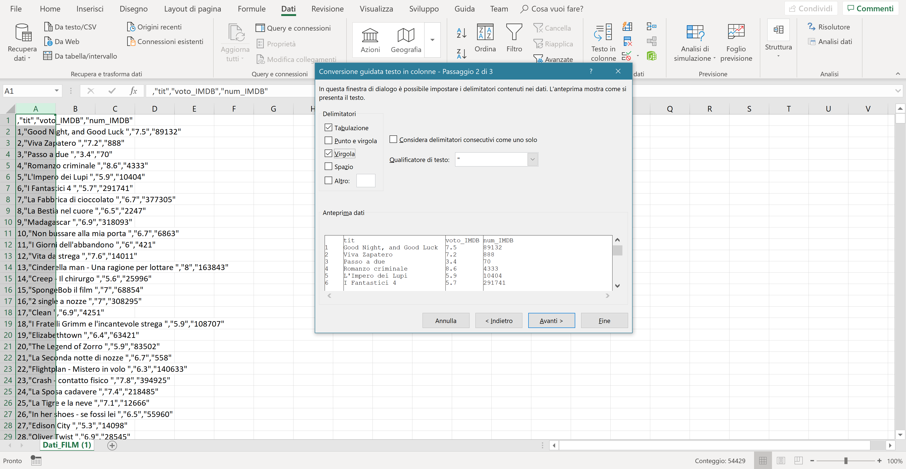
Cliccare poi su fine:
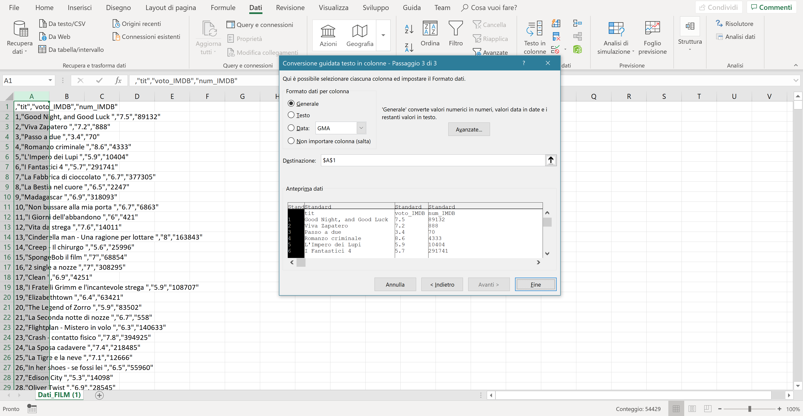
E i dati sono stati divisi in colonna:
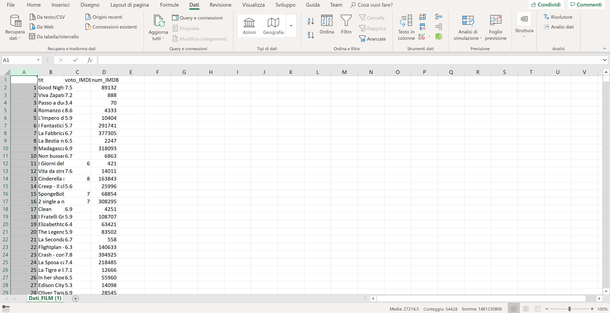
Di lettura non modificabili
Queste tipologie di formati non offrono la possibilità una volta salvati di essere modificati. Tra questi possiamo trovare
.html, .htm, .pdf, .xps, .mht.
Quali strumenti di importazione automatica offre Excel e come si utilizzano?
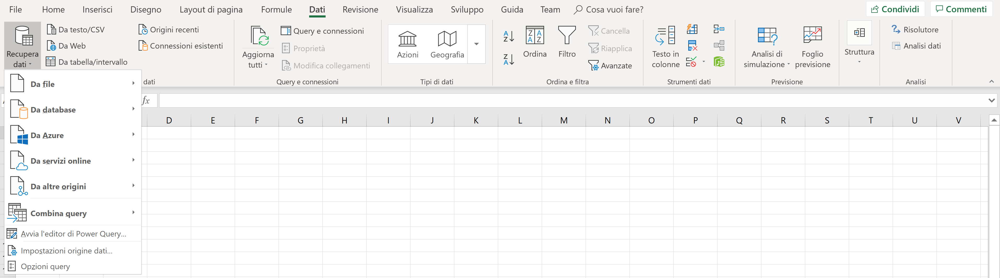
Excel offre molti strumetni automatici per importare automaticamente i dati, i principali e quelli di applicazione più comuni sono 3:
Formati testo/CSV
Questo strumento è semplice, per testarlo si possono utililizzare questi file:
Download file1 formato .csv
Download file2 formato .txt
Download file3 formato .prn
Con questo strumento basta andare nella barra menu in "Dati", poi andare su "Recupera dati", "da file" e infine cliccare "DA testo/CSV" e seguire la procedura di importazione.
Quindi in breve: DATI > RECUPERA DATI > DA FILE > DA testo/CSV
Poi bisogna selezionare il file e i dati vengono caricati correttamente, questo metodo funziona con tutti i formati basati su file di testo (
.csv, il
.txt e il
.prn).
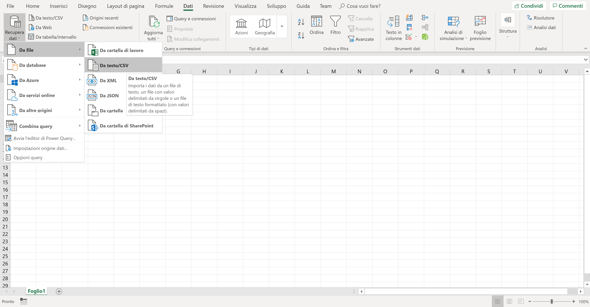
Formati XML
Per testare questo strumento si può utililizzare questo file:
Download file formato .xml
E occorre procedere con: DATI > RECUPERA DATI > DA FILE > DA XML
Il file XML è strutturato nel seguente modo:
1
Rick
623.3
1/1/2012
IT
2
Dan
515.2
9/23/2013
Operations
3
Michelle
611
11/15/2014
IT
4
Ryan
729
5/11/2014
HR
5
Gary
843.25
3/27/2015
Finance
6
Nina
578
5/21/2013
IT
7
Simon
632.8
7/30/2013
Operations
8
Guru
722.5
6/17/2014
Finance
Per avere altre informazioni su come inportare un file XML visitare questo sito
Dal web (webscraping)
In questa ultima sezione capiamo come importare dati che magari cambiano di settimana in settimana o di giorno in giorno e riuscire a renderlo piu automatico per cercare di perdere il meno tempo possibile.
In particolare ci baseremo su un esempio semplice: vogliamo scaricare i dati delle squadre di Serie A sfruttando gli strumenti di importazione automatica di Excel.
Nell'esempio sottostante per scaricare i dati ci collegheremo al sito:
http://www.legaseriea.it/it/serie-a/classifica
Andiamo su "DATI - RECUPERA DATI - DA ALTRE ORIGINI - DA WEB"
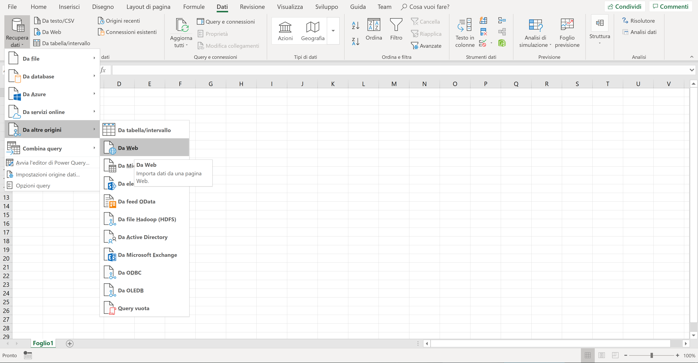
Inseriamo il link dal quale vogliamo copiare la tabella:
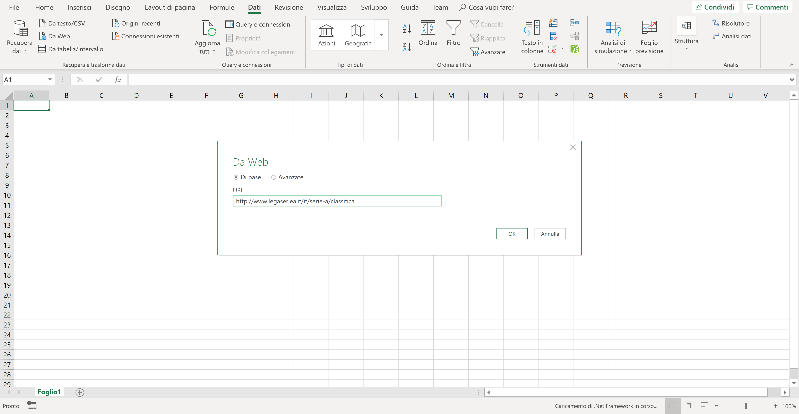
Una volta che Excel ha analizzato la pagina web ti elenca tutte le tabelle che ci sono nella pagina web (Table 0, Table 1 ...) e occorre selezionare la tabella che ci interessa e poi cliccare su carica:
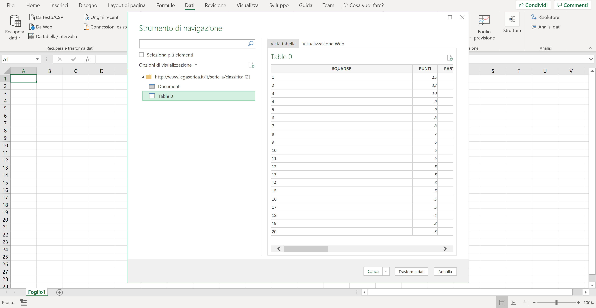
I dati vengono caricati correttamente:
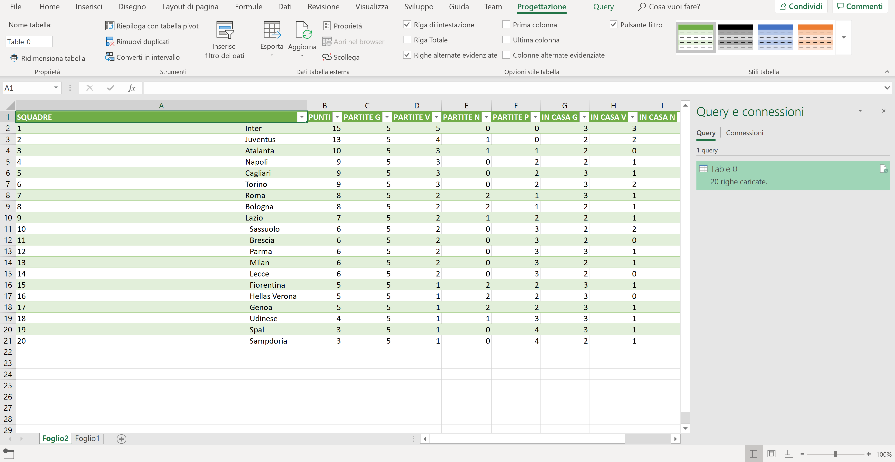